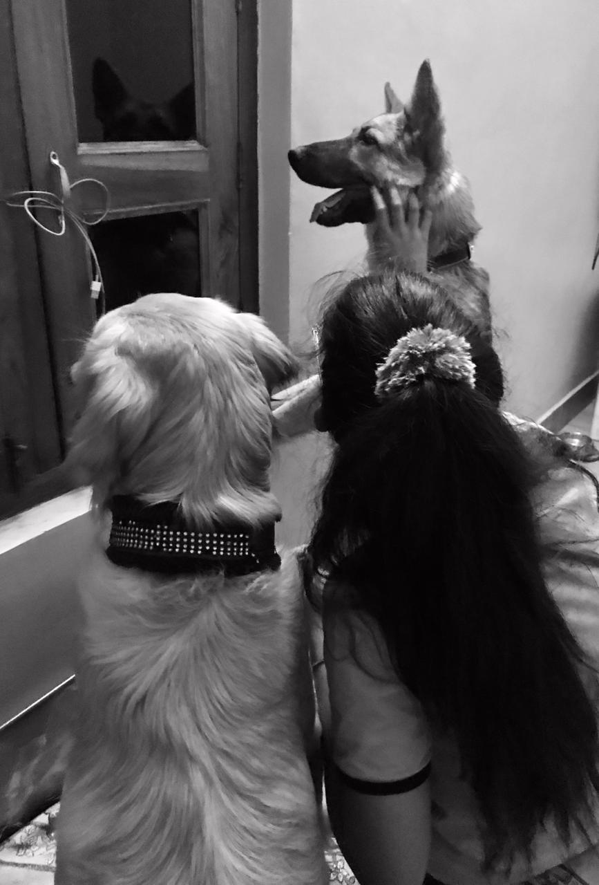
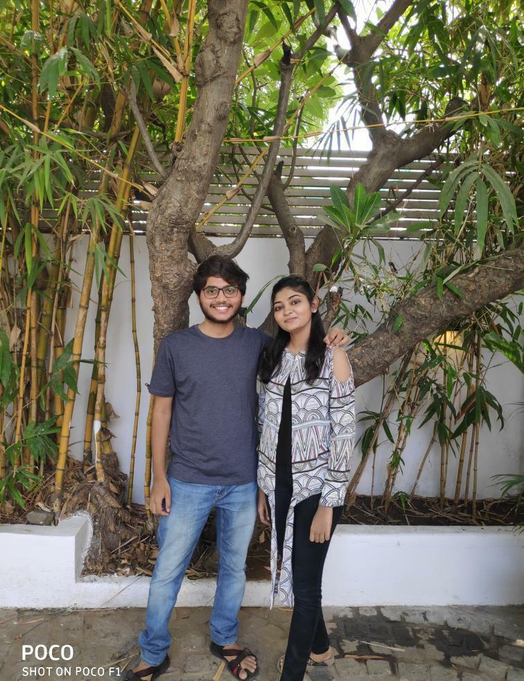
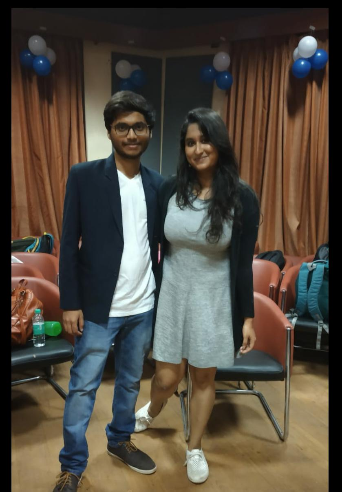
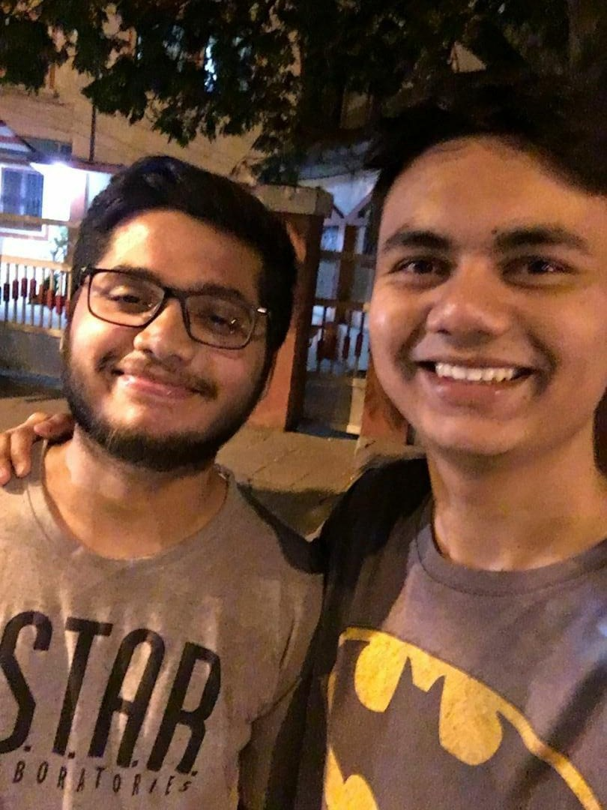
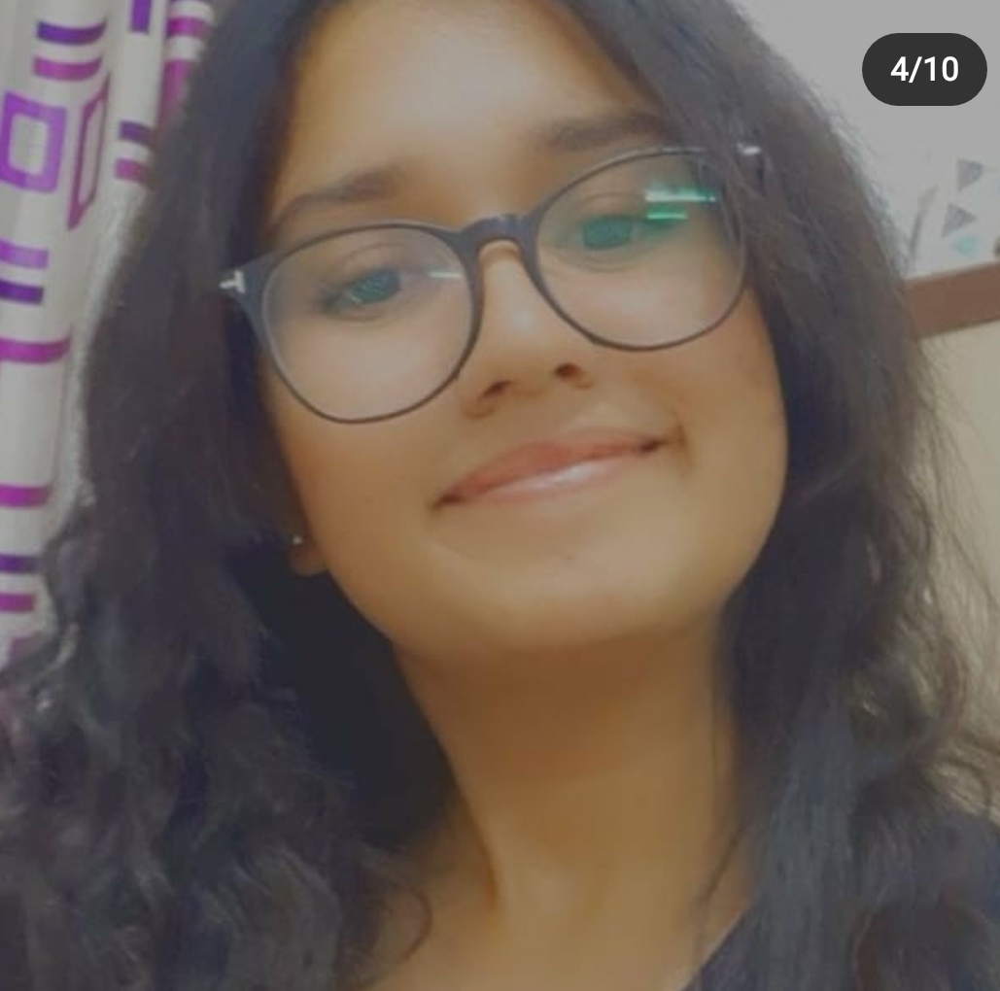
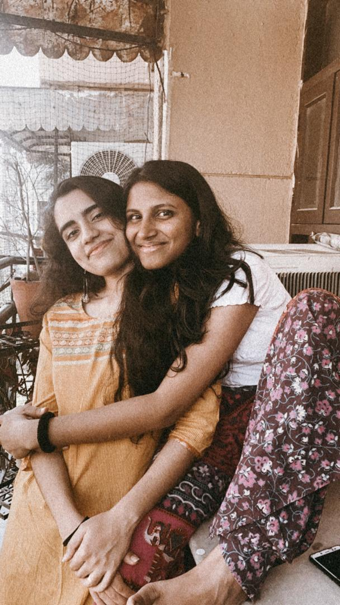
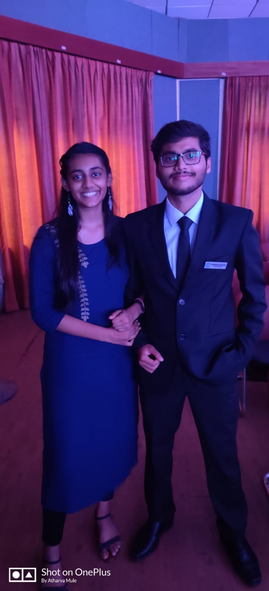
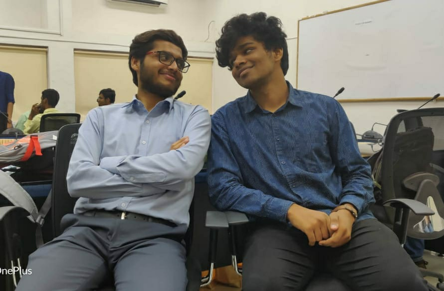
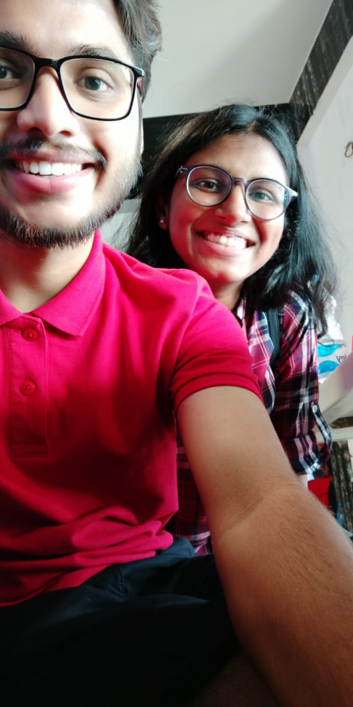

Happy Birthday Heemya~
a stand-up comedian

a stand-up comedian
|  | She's the dog lover, the one who's messages reach atharva first rather then reaching to her best friends. Our Class's idol, only because she's a future lawyer-Its none other than Pankhuri PankajHappy Birthday Sasta John Mayer!!! Have a great birthday and thoda smile kar diya kar Jab Darshana ke saath photo khichwata hai (specially when she's looking nice). Stay happy and keep darshu happy! Baaki veg biryani doesn't exist. Don't @ me for this one. Happy birthday!! Ps- I hope Oral B sponsors you very very soon xD |
Next up is one of your Nagpur gang peeps, the one who had the honor of being your fake-grilfriend for about two weeks? is that it? Future doctor, who vouches to treat you for free till the time you give her free entry tickets to your show. Its none other than..... Vaishnavi Malode~Hey... You are funny and a very good friend, be as you are. Bohot bada comedian banna aur fir mere sath photo dalna, mai famous ho jaungi fir. Keep enjoying sagar kinare!!! PS Happy birthday!!! PS no 2 Next time pakka milenge. |
 |
|  | 3rd act is uhm uhm, the one who longs of having friends,and having a not so awkward conversations with guys, even though she single handedly triumphs us all at beating us in her own troubles. I give you, the very smart, sexy as fuck, a rashogolla enthusiast...... Annesha Banerjee~Happy birthday Heemanshu, Can't believe it's already been almost 2 years since that long ass bus ride to Kolkata and the day you decided to make Sankalp and I walk 10 km trying to catch up with your brother. It's been almost over a year I've even seen you fight with teachers and scare me with your hyena laughter. And unpopular opinion, but I did kind of enjoy when 60 of us used to be together, crammed in a little room, pushing someone else for space. Basically I miss sleeping in class without being spotted and Def the drame :D ❤. Continue with your stand up and the next time we'll all go to kgp to see hot guys and also root for you. Byeee, enjoy your day and eat mutton if you can ༼ つ ◕_◕ ༽つ❤ |
This next guy is a fellow comedian, Your rival since the start of your career, Your podcast buddy. I'm guessing you have already guessed who it is from the pics, but still imma introduce him .I give you the very funny, Sarthak Patil~Happy Birthday Mhaskar. I hope you feel your best today and savour this day despite the lockdown, And use all of that excitment to forget how you were terrified after you did a "bomb joke" in front of a certain community at Bouffage. |
 |
|  | This pretty girl, thinks she is soo smarter than me, but we all know who's got IQ 200 and who's got ded grey cells.My personal chauffeur since 2008,apne gang is Ghodhi No.1, co-writer of 2 books that we never completed, and the brand ambassdor of "hinge" nowadays, its none other than the cool and fabulous..... Pritha Tiwari!!!Hi Heemanshu, I hope you are doing well :), Happy Birthday YYaaar!!!, have a great day amidst this madness. Bake yourself a cake, and soon enough all your friends will be asking you for a grand party. If Darshana gives you a supper tatti gift, just ask her to order ghar ka rasahan for you, she is pretty good at saving money, and will get you terrific discounts by harassing the 24/7 available sales ladies. Also, a pretty good singer herself, ask her to put a one-woman show for you. There are to lengths to which I can speak about how Darshana can entertain you, given that I am a terrific spokesperson for my girl, but this day is yours, so go ahead ask her for anything. If she refuses, ping me, I'll hide her cheese Maggi for the rest of the decade. ; ) Cheers!! Prithu ❤️ |
Mic check 1,2,3... heeheehooo. I'm sorry for that nonesense, but i had to do it in order to tell you , the importance of the next person, in my sweet little not-so-innocent grill gang.(founded by yours truly) This bish right here left us in 2017 and met with me after 3 fucking years with almost 2-3 video calls per year.With the potenial of becoming a great artist in the near future, Its mah girl, the girl who's stomach never stops growling, and haunts us during every horror movie we have ever watched together, freshly shipped from china----- Kashish Ghakhar~~~Happy Birthday Heemanshu(ﾉ◕ヮ◕)ﾉ*:･ﾟ✧ Wish you achieve your stand up comedy dreams. Wish you And Darshana 久久. Thank you for taking care of mah fren even though I know she can be a little dense and hot-headed at times. Thank you for being patient and trying to understand her. Through the time I’ve spent with Darshana, I’ve come to realize that she’s very straightforward and speaks her mind and that’s what I like about her, her honesty, but people also misunderstand and alienate her because of that. I’m glad you were there for her during those times. Thank you for making her your priority. Even though I’ve never talked to you before but I hope you guys last because she’s told me only good things about you. |
 |
|  | I don't think this person needs an intoduction, cause mein chahe kitna bhi bolu, ladke iske peeche padhta hi rahenge, Is2g, if for every boy trouble of hers we had 10 Rs, Trust me I would already have a 1000Rs in my hand.Her popular phrase is "Behave yourself! sankalp!!" and she loves to shout at peoplein front of a crowd, especially at you heemya. But even after all that, she still somehow managed to have more friends than the two of us combined. I present you, Ms. Namratha Raghavendhran.So the big man turns 21 today, it means existential crisis zyada frequently hoga. But nai hona chahiye, u know why? Because you are already “the most intelligent comic of comedy highway”. I’m eagerly waiting for your Netflix special tho. Keep doing comedy, stay and make people happy with your jokes. I still remember our first conversation, where in you were so fucking terrified of me because I was constantly teasing and annoying you. I cherish those days, who knows if we will be in touch after college. But I’m reminding you that you are one of the closest friends I currently have in my life. You have been a great friend and support system for me, understood all my problems and have had my back. All our fights, arguments have taught us lessons and we have learnt from it. You are more like my mirror image, sometimes depressed, short-tempered but smart (unlike me). Just keep writing your one liners, because personally I love listening to your jokes, I’m sure many do. Keep improving on how to play chess and not poker, for obvious reasons. And do what you love; don’t care about what others will say. Follow your dream and passion, because it’s necessary for people like us to achieve happiness in what we do. Now no more depressing and emotional talks. The only regret I have until now, is the fact that I broke your bond with. I might not have been the actual reason, but somewhere down the line I think people have left you because of me and my ignorant, outgoing behavior around people. Some people left you this year too, because of my mistake I made last year. And I want to let you know that I’m really sorry for everything that happened. But I’m glad you haven’t let such things affect our friendship. I might have done things which might have cost the respect you have for me, but respect for you has never gone down. And it will be the same. I just wish I could make things go back to how they were at the beginning. I have said enough, just keep in mind that I will always stand by you no matter what; will always have your back. Happiest birthday Harvey specter. Enjoy your day in quarantine. |
Now we are down to our last contestant, the man who broke bones cause of his ex ( a stupid mistake i tell you) , who believes that he's really good at poker when in fact he ain't, an average football player ( jk jk atti ko maat batiyo) and who's main motto in life is to "Never look back". Ladies and gentleman, he's none other them Mr. atti, urf Athrav Mule of the Mhaskar Mule firm.Hemmyaaa(づ｡◕‿‿◕｡)づ❤️❤️❤️ Happy Birthday bhauuuu (¬‿¬) sale 21 years ka ho gaya tu. Ese he machate rhna bro. Stand up krna kabhi maat chodhna bahot cool lagta h ek engineering jabh stand up comedy krta h. Bc jabh college mein aaya tha mein kaha tha koi naya dost nai milega mujhe fir orientation ke din teko shorts mein dekh liya pure college mein ek tu he tha mere jaisa jo shorts pehen ke aaya tha. Mache rhe bro. Sale bahot miss krta hu teko. Apan jo room mein kide krte h yaad h uss din kitna chicken waste kiya tha ~(˘▾˘~). Tu sabse best roommate h gannya\ (•◡•) / bahot masti ki h apan ne suits kitne baar binge watch kiya h. Bc reshuffle ke baad bhi sath mein nai h😭 bahot miss krunga bc tujhe but koi na apan machenge bro~ Harvey to my Mike Mera sasta John Mayer (づ｡◕‿‿◕｡)づ❤️ Love you bhau😭❤️ |
 |
Hey Shoots!! Wassup, its your grill Darshana, a.k.a Raman as you know it. Happy birthday heemya!!! 21 ka ho gaya, abh bas mere 21 ka hone ka wait kar, and then maybe we can do what you always wanted to do together.. and that is ofcourse ..... Daaru peena yrr. (we are keeping this pg-13 mind you, i ain't gonna be saying stuff that you imagine twice or thrice a week.) Stay happy, healthy both mentally and physcially. You have achieved a lot of milestones the past year, don't forget that. Learn from your failures and shine your talents even further so that soon people would see you on netflix and be like "Why did i make an enemy out of that guy" (also to get major bragging rights obvio). Small talk mai karungi nhi, cause almost daily hum wahi karne ki koshish karte hai, and we both know how much we suck at keeping the conversation flowing, but the fact that apne break-ups bhi sirf 1 din he last karte hai is a huge achievement on both our parts. Tune finally apna longest datig duration wala record todh diya, and maine apne boyfriend wala so i guess we gucci now. Anyways its you birthday, so enjoy the day to your fullest, apni mumma ko zyada tang maat kariyo, help her out with the household works once in a while. Do some wild stuff admist this corona state so that you don't lose your sanity, chess mein apni rating badhata rahiyo, get some books for that if you want, or maybe i can gift it to you as a birthday gift, cause as you already know "Souled store is currently not selling back covers." Baki aur cringey cheeze mujhe yaad nhi aa rahi except for mwuah mwuah XOXO and loads of love, yeh sabh likhne ki zaroorat nhi padhni chahiye mujhe, you already know how muh i care about you and stuff. And i sincerely hope that This measures for atleast 2 years of birthday gifts cause boi did i not invest a lot of my time and effort on this. Much more to listen to but first "life is not a race, its marathon.that we can prolly run together to the finish line." Obstacles ayenge zinagi mein kaafi, but as long as you don't lose track of what you seek as the end result. Tada, MUJHE PARTY CHAHIYE ANE KE BAAD PAKKA WALI. bye-bye~
